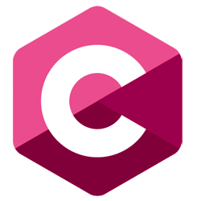

spiegazione
Cos' è C ?
il linguaggio di programmazione C è un linguaggio imperativo, strutturato e compilato, sviluppato nei primi anni '70 da Dennis Ritchie. È noto per la sua efficienza e portabilità, offrendo un controllo diretto sull'hardware grazie al basso livello di astrazione. Queste caratteristiche lo rendono ideale per lo sviluppo di sistemi operativi e software di sistema, e la sua sintassi semplice ha influenzato numerosi altri linguaggi di programmazione.
esercizi
Siti

sito ufficiale